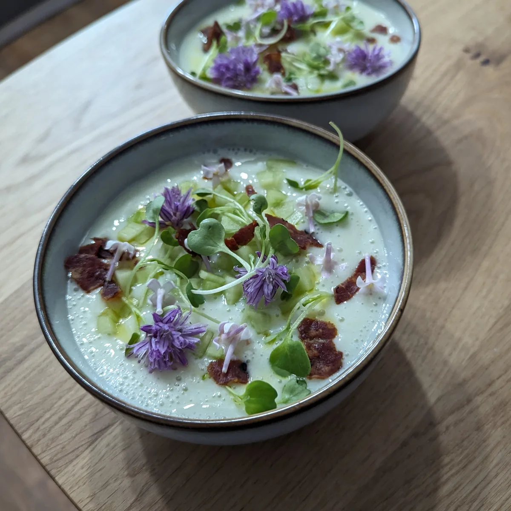
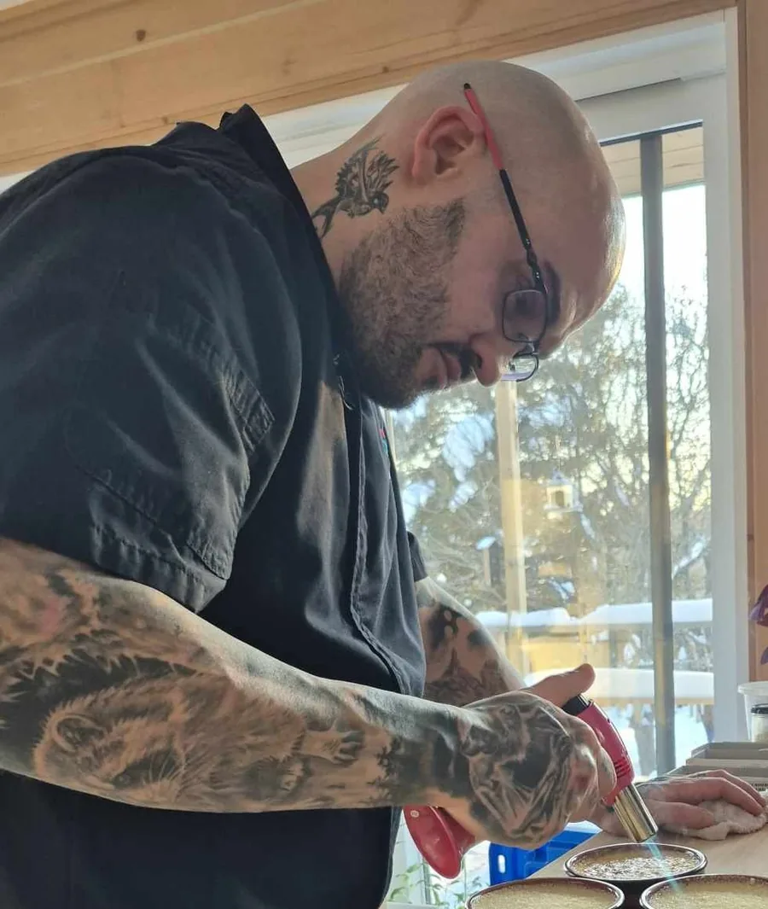
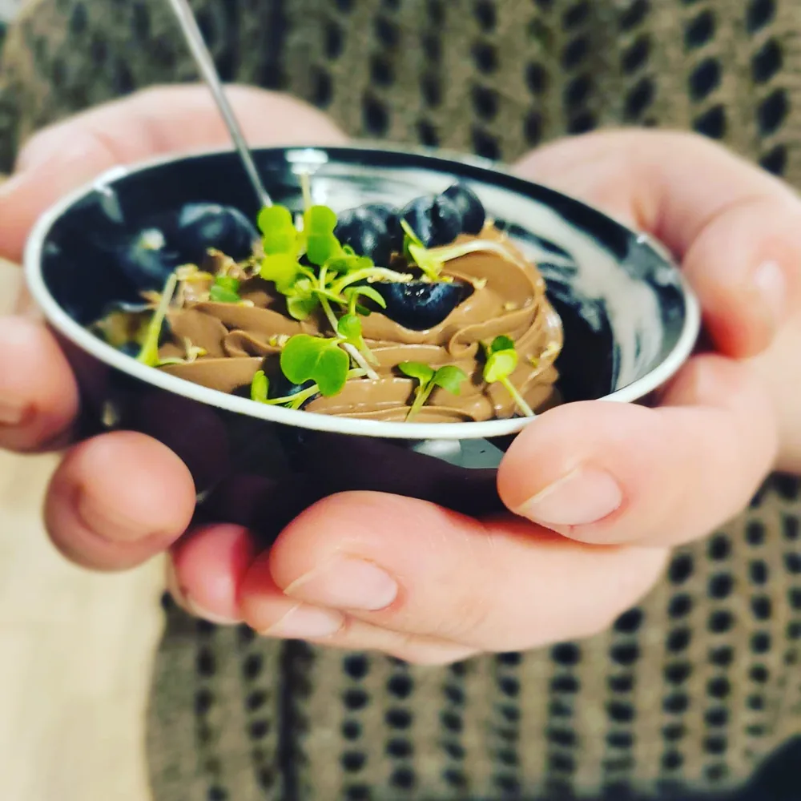

Expérience gastronomique privée
Une cuisine née du territoire, servie chez vous.
Chef Phil cuisine ce que la forêt murmure, ce que les champs offrent et ce que les saisons décident — une expérience gastronomique entièrement sans gluten, à votre table.
« Être chef privé, pour moi, ce n'est pas seulement cuisiner. C'est raconter le territoire dans une assiette. C'est faire goûter la forêt, la terre, le vent du Nord. » — Chef Phil, Boréale sans gluten
Trois ans
à cuisiner dans les maisons du Québec
100 % sans gluten
Aucun compromis sur le goût
Sur mesure
Un menu selon vos produits et la saison

Créations
Les plats et l'esprit de la cuisine boréale.

Comment ça marche
De la réservation au dessert.

Le chef
Trois ans à cuisiner le territoire.

Contact
Réserver une soirée.
Chaque table devient un moment suspendu.
Un voyage au cœur du Québec vivant, brut et authentique — préparé chez vous, pour votre table.
Réserver une soirée →